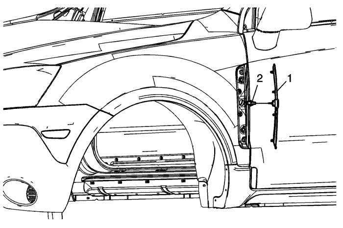

Sustitución de la moldura central del guardabarros delantero — Carrocería corta

Leyenda
Nombre del componente
1
Montaje de la moldura central del guardabarros delantero
Procedimiento
Abra la puerta del lado del que se va a reparar la moldura del guardabarros delantero.
Trabajando desde la parte interior de la zona del montante de bisagra, inserte una pequeña base de 8 mm sobre una carraca encima de los pasadores de sujeción de plástico para soltar presión.
Empiece a soltar los seguros desde la parte inferior de la moldura hacia la parte superior.
Al soltar el primer pasador de sujeción inferior, inserte una pequeña herramienta con punta plana de plástico entre el panel exterior de la carrocería y el conjunto de la moldura para evitar que el seguro vuelva a acoplarse en el orificio del panel del guardabarros.
Desemborne el enchufe del mazo de cables eléctrico de la carcasa del faro.
Emborne el casquillo de la bombilla del mazo de cables eléctrico a la carcasa del faro.
Coloque los seguros de la moldura en los orificios de la aleta.
Fije los seguros en los orificios de la aleta con la palma de la mano.
Se oirá un pequeño clic cada vez que uno de los seguros quede fijo en el panel de la aleta.
2
Montaje del intermitente lateral delantero
Volcar Desemborne el conector eléctrico antes de retirar el conjunto de la moldura central de la aleta.